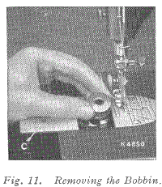
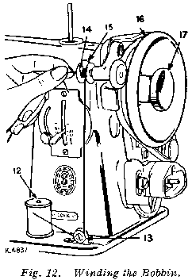
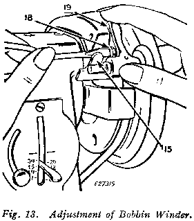
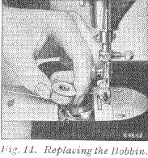
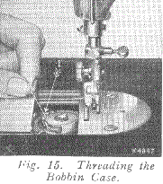
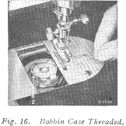
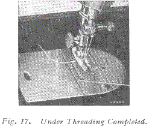
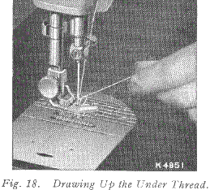

UPPER THREADING
See Fig 10.
Raise take-up lever 5 to its highest point.
Place spool of thread on spool pin.
Lead thread into thread guide 1.
Down and from right to left between tension discs 2.
Into the loop of the take-up spring 3 and to the right until it enters the fork 4.
Up and from right to left through hole in take-up lever 5.
Down through guide 6 on face plate.
Down through guide 7 into guide 8.
From right to left through the eye of the needle.
Draw about two inches of thread through the eye of the needle with which to begin sewing.
TO REMOVE BOBBIN
Raise the needle to its highest point.
Draw to the left the slide (C) in the bed of the machine and remove the bobbin with the thumb and forefinger of the left hand, as shown in Fig 11.
TO WIND BOBBIN See Fig 12
1. Place bobbin on spindle with pin of spindle entering hole in right side of bobbin.
2. Lock bobbin in place by pressing bobbin winder down until latch 15, Fig 12 engages.
3. Place spool of thread on spool pin 12. Draw thread under and between tension discs 13. Lead thread up through hole in bobbin 14 from the inside.
4. Hold hand wheel 16 and loosen knurled screw 17 by turning it over toward you.
5. Hold end of thread and operate machine as for sewing. Continue to hold end of thread until it breaks off.
Allow tension discs to control flow of thread. Do not guide or hold thread when winding bobbin.
The bobbin winder will stop automatically when the bobbin is filled.
Remove bobbin from spindle and tighten knurled screw 17.
If pressure of bobbin winder pulley against hub of hand wheel is insufficient for winding the bobbin, press down bobbin winder until latch 15, Fig 13 drops and holds it in position.
Loosen adjusting screw 18, Fig 13. With forefinger, push back upper end of slotted plate 19 as far as it will go, as shown in Fig 13, and at the same time, press bobbin winder pulley against the hub of hand wheel.
Tighten adjusting screw 18.
If thread does not wind evenly on bobbin, loosen screw which holds tension bracket 13, Fig 12 in position. Move bracket to the left if bobbin winds high on right; move bracket to the right if bobbin winds high on left.
When bracket is properly centred, thread will wind evenly across bobbin.
Bobbins can be wound while machine is sewing. Follow numbered instructions above omitting item 4.
TO REPLACE BOBBIN
Hold the bobbin between the thumb and forefinger of the left hand, the thread drawing from right to left, as shown in Fig 14.
Place the bobbin into the bobbin case and draw the thread into the slot 1, Fig 15 in the bobbin case, as shown. Draw the thread backward between the bobbin case and the tension spring until it reaches the notch 2, Fig 16, then pull the thread toward the right, as shown in Fig 16.
Close the slide, as shown in Fig 17.
TO PREPARE FOR SEWING
Have the thread take-up lever at its highest position, then, with the left hand, hold the end of the needle thread, leaving it slack drom the hand to the needle. Turn the hand wheel over toward you until the needle moves down and up again to its highest position, thus catching the bobbin thread. Draw up the needle thread and the bobbin thread will come up with it through the hole in the throat plate as shown in Fig 18.
Lay both threads back under the presser foot diagonally across the feed, to the right or left, depending upon which side of the needle the material is to be located so that when the presser foot is lowered, the threads will be firmly held between the feed and the presser foot.
